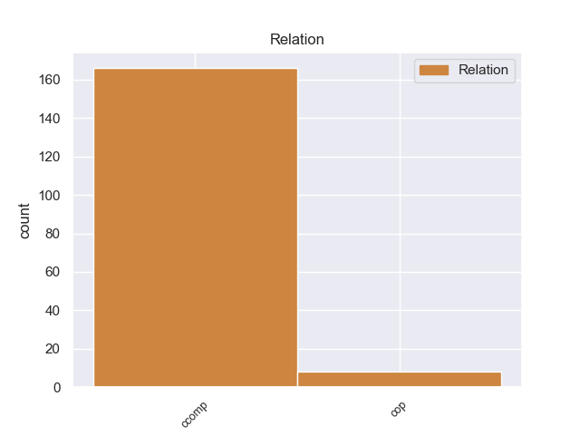
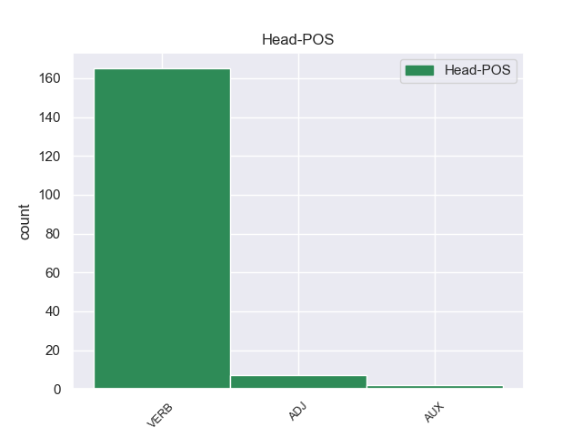

Distribution of features within this leaf



Agreement Rules sorted by frequency.
- When the dependent token is the clausal complement(ccomp) of the head token,
1 Συνεπώς _ _ _ _ 0 _ _ _
2 , _ _ _ _ 0 _ _ _
3 η _ _ _ _ 0 _ _ _
4 παρούσα _ _ _ _ 0 _ _ _
5 αίτηση _ _ _ _ 0 _ _ _
6 άρσης _ _ _ _ 0 _ _ _
7 της _ _ _ _ 0 _ _ _
8 ασυλίας _ _ _ _ 0 _ _ _
9 δεν _ _ _ _ 0 _ _ _
10 αφορά αφοράr VERB _ Mood=Ind|Number=Sing|Person=3|Tense=Pres|VerbForm=Fin 0 _ _ _
11 το _ _ _ _ 0 _ _ _
12 ζήτημα _ _ _ _ 0 _ _ _
13 εάν _ _ _ _ 0 _ _ _
14 οι _ _ _ _ 0 _ _ _
15 διώξεις _ _ _ _ 0 _ _ _
16 μπορούν μπορο VERB _ Mood=Ind|Number=Plur|Person=3|Tense=Pres|VerbForm=Fin 10 ccomp _ _
17 ή _ _ _ _ 0 _ _ _
18 πρέπει _ _ _ _ 0 _ _ _
19 να _ _ _ _ 0 _ _ _
20 συνεχιστούν _ _ _ _ 0 _ _ _
21 με _ _ _ _ 0 _ _ _
22 βάση _ _ _ _ 0 _ _ _
23 το _ _ _ _ 0 _ _ _
24 γαλλικό _ _ _ _ 0 _ _ _
25 δίκαιο _ _ _ _ 0 _ _ _
26 . _ _ _ _ 0 _ _ _
Disagree Examples:
1 Sin _ _ _ _ 0 _ _ _
2 embargo _ _ _ _ 0 _ _ _
3 dijo decir VERB _ Mood=Ind|Number=Sing|Person=3|Tense=Past|VerbForm=Fin 0 _ _ _
4 que _ _ _ _ 0 _ _ _
5 ahora _ _ _ _ 0 _ _ _
6 están estar VERB _ Mood=Ind|Number=Plur|Person=3|Tense=Pres|VerbForm=Fin 3 ccomp _ _
7 " _ _ _ _ 0 _ _ _
8 en _ _ _ _ 0 _ _ _
9 un _ _ _ _ 0 _ _ _
10 nivel _ _ _ _ 0 _ _ _
11 aceptable _ _ _ _ 0 _ _ _
12 " _ _ _ _ 0 _ _ _
13 y _ _ _ _ 0 _ _ _
14 que _ _ _ _ 0 _ _ _
15 se _ _ _ _ 0 _ _ _
16 podrán _ _ _ _ 0 _ _ _
17 agilizar _ _ _ _ 0 _ _ _
18 esas _ _ _ _ 0 _ _ _
19 entregas _ _ _ _ 0 _ _ _
20 de _ _ _ _ 0 _ _ _
21 alimentos _ _ _ _ 0 _ _ _
22 , _ _ _ _ 0 _ _ _
23 medicinas _ _ _ _ 0 _ _ _
24 , _ _ _ _ 0 _ _ _
25 agua _ _ _ _ 0 _ _ _
26 y _ _ _ _ 0 _ _ _
27 ropa _ _ _ _ 0 _ _ _
28 . _ _ _ _ 0 _ _ _
1 En _ _ _ _ 0 _ _ _
2 el _ _ _ _ 0 _ _ _
3 siglo _ _ _ _ 0 _ _ _
4 XVI _ _ _ _ 0 _ _ _
5 aparecen _ _ _ _ 0 _ _ _
6 dos _ _ _ _ 0 _ _ _
7 libros _ _ _ _ 0 _ _ _
8 , _ _ _ _ 0 _ _ _
9 el _ _ _ _ 0 _ _ _
10 Libro _ _ _ _ 0 _ _ _
11 verde _ _ _ _ 0 _ _ _
12 de _ _ _ _ 0 _ _ _
13 Aragón _ _ _ _ 0 _ _ _
14 y _ _ _ _ 0 _ _ _
15 El _ _ _ _ 0 _ _ _
16 tizón _ _ _ _ 0 _ _ _
17 de _ _ _ _ 0 _ _ _
18 la _ _ _ _ 0 _ _ _
19 nobleza _ _ _ _ 0 _ _ _
20 de _ _ _ _ 0 _ _ _
21 España _ _ _ _ 0 _ _ _
22 , _ _ _ _ 0 _ _ _
23 donde _ _ _ _ 0 _ _ _
24 se _ _ _ _ 0 _ _ _
25 demuestra demostrar VERB _ Mood=Ind|Number=Sing|Person=3|Tense=Pres|VerbForm=Fin 0 _ _ _
26 que _ _ _ _ 0 _ _ _
27 , _ _ _ _ 0 _ _ _
28 prácticamente _ _ _ _ 0 _ _ _
29 , _ _ _ _ 0 _ _ _
30 toda _ _ _ _ 0 _ _ _
31 la _ _ _ _ 0 _ _ _
32 nobleza _ _ _ _ 0 _ _ _
33 española _ _ _ _ 0 _ _ _
34 tenía tener VERB _ Mood=Ind|Number=Sing|Person=3|Tense=Imp|VerbForm=Fin 25 ccomp _ _
35 algunas _ _ _ _ 0 _ _ _
36 o _ _ _ _ 0 _ _ _
37 muchas _ _ _ _ 0 _ _ _
38 gotas _ _ _ _ 0 _ _ _
39 de _ _ _ _ 0 _ _ _
40 sangre _ _ _ _ 0 _ _ _
41 judía _ _ _ _ 0 _ _ _
42 . _ _ _ _ 0 _ _ _
1 En _ _ _ _ 0 _ _ _
2 declaraciones _ _ _ _ 0 _ _ _
3 a _ _ _ _ 0 _ _ _
4 los _ _ _ _ 0 _ _ _
5 periodistas _ _ _ _ 0 _ _ _
6 , _ _ _ _ 0 _ _ _
7 el _ _ _ _ 0 _ _ _
8 alcalde _ _ _ _ 0 _ _ _
9 Elche _ _ _ _ 0 _ _ _
10 y _ _ _ _ 0 _ _ _
11 también _ _ _ _ 0 _ _ _
12 vicesecretario _ _ _ _ 0 _ _ _
13 general _ _ _ _ 0 _ _ _
14 de _ _ _ _ 0 _ _ _
15 el _ _ _ _ 0 _ _ _
16 PSPV _ _ _ _ 0 _ _ _
17 - _ _ _ _ 0 _ _ _
18 PSOE _ _ _ _ 0 _ _ _
19 ha _ _ _ _ 0 _ _ _
20 manifestado manifestar VERB _ Gender=Masc|Number=Sing|Tense=Past|VerbForm=Part 0 _ _ _
21 que _ _ _ _ 0 _ _ _
22 , _ _ _ _ 0 _ _ _
23 " _ _ _ _ 0 _ _ _
24 evidentemente _ _ _ _ 0 _ _ _
25 " _ _ _ _ 0 _ _ _
26 , _ _ _ _ 0 _ _ _
27 Amorós _ _ _ _ 0 _ _ _
28 " _ _ _ _ 0 _ _ _
29 seguirá seguir VERB _ Mood=Ind|Number=Sing|Person=3|Tense=Fut|VerbForm=Fin 20 ccomp _ _
30 formando _ _ _ _ 0 _ _ _
31 parte _ _ _ _ 0 _ _ _
32 de _ _ _ _ 0 _ _ _
33 el _ _ _ _ 0 _ _ _
34 grupo _ _ _ _ 0 _ _ _
35 socialista _ _ _ _ 0 _ _ _
36 " _ _ _ _ 0 _ _ _
37 en _ _ _ _ 0 _ _ _
38 el _ _ _ _ 0 _ _ _
39 ayuntamiento _ _ _ _ 0 _ _ _
40 ilicitano _ _ _ _ 0 _ _ _
41 . _ _ _ _ 0 _ _ _
1 Su _ _ _ _ 0 _ _ _
2 amor _ _ _ _ 0 _ _ _
3 por _ _ _ _ 0 _ _ _
4 Rogue _ _ _ _ 0 _ _ _
5 se _ _ _ _ 0 _ _ _
6 mantenía _ _ _ _ 0 _ _ _
7 intacto _ _ _ _ 0 _ _ _
8 , _ _ _ _ 0 _ _ _
9 pero _ _ _ _ 0 _ _ _
10 la _ _ _ _ 0 _ _ _
11 incapacidad _ _ _ _ 0 _ _ _
12 controlar _ _ _ _ 0 _ _ _
13 sus _ _ _ _ 0 _ _ _
14 poderes _ _ _ _ 0 _ _ _
15 causó causar VERB _ Mood=Ind|Number=Sing|Person=3|Tense=Past|VerbForm=Fin 0 _ _ _
16 que _ _ _ _ 0 _ _ _
17 ella _ _ _ _ 0 _ _ _
18 terminará terminar VERB _ Mood=Ind|Number=Sing|Person=3|Tense=Fut|VerbForm=Fin 15 ccomp _ _
19 con _ _ _ _ 0 _ _ _
20 la _ _ _ _ 0 _ _ _
21 relación _ _ _ _ 0 _ _ _
22 que _ _ _ _ 0 _ _ _
23 llevaban _ _ _ _ 0 _ _ _
24 por _ _ _ _ 0 _ _ _
25 miedo _ _ _ _ 0 _ _ _
26 a _ _ _ _ 0 _ _ _
27 lastimar _ _ _ _ 0 _ _ _
28 lo _ _ _ _ 0 _ _ _
29 . _ _ _ _ 0 _ _ _
1 Un _ _ _ _ 0 _ _ _
2 estudio _ _ _ _ 0 _ _ _
3 de _ _ _ _ 0 _ _ _
4 la _ _ _ _ 0 _ _ _
5 solvatación _ _ _ _ 0 _ _ _
6 a _ _ _ _ 0 _ _ _
7 la _ _ _ _ 0 _ _ _
8 temperatura _ _ _ _ 0 _ _ _
9 de _ _ _ _ 0 _ _ _
10 congelación _ _ _ _ 0 _ _ _
11 de _ _ _ _ 0 _ _ _
12 el _ _ _ _ 0 _ _ _
13 agua _ _ _ _ 0 _ _ _
14 dedujo deducir VERB _ Mood=Ind|Number=Sing|Person=3|Tense=Past|VerbForm=Fin 0 _ _ _
15 que _ _ _ _ 0 _ _ _
16 la _ _ _ _ 0 _ _ _
17 hidratación _ _ _ _ 0 _ _ _
18 media _ _ _ _ 0 _ _ _
19 en _ _ _ _ 0 _ _ _
20 agua _ _ _ _ 0 _ _ _
21 fría _ _ _ _ 0 _ _ _
22 viene venir VERB _ Mood=Ind|Number=Sing|Person=3|Tense=Pres|VerbForm=Fin 14 ccomp _ _
23 a _ _ _ _ 0 _ _ _
24 ser _ _ _ _ 0 _ _ _
25 H3O _ _ _ _ 0 _ _ _
26 + _ _ _ _ 0 _ _ _
27 ( _ _ _ _ 0 _ _ _
28 H2O _ _ _ _ 0 _ _ _
29 ) _ _ _ _ 0 _ _ _
30 6 _ _ _ _ 0 _ _ _
31 : _ _ _ _ 0 _ _ _
32 como _ _ _ _ 0 _ _ _
33 media _ _ _ _ 0 _ _ _
34 , _ _ _ _ 0 _ _ _
35 seis _ _ _ _ 0 _ _ _
36 moléculas _ _ _ _ 0 _ _ _
37 de _ _ _ _ 0 _ _ _
38 agua _ _ _ _ 0 _ _ _
39 solvatan _ _ _ _ 0 _ _ _
40 un _ _ _ _ 0 _ _ _
41 protón _ _ _ _ 0 _ _ _
42 y _ _ _ _ 0 _ _ _
43 éstas _ _ _ _ 0 _ _ _
44 son _ _ _ _ 0 _ _ _
45 incapaces _ _ _ _ 0 _ _ _
46 a _ _ _ _ 0 _ _ _
47 su _ _ _ _ 0 _ _ _
48 vez _ _ _ _ 0 _ _ _
49 de _ _ _ _ 0 _ _ _
50 solvatar _ _ _ _ 0 _ _ _
51 simultáneamente _ _ _ _ 0 _ _ _
52 otra _ _ _ _ 0 _ _ _
53 especie _ _ _ _ 0 _ _ _
54 . _ _ _ _ 0 _ _ _